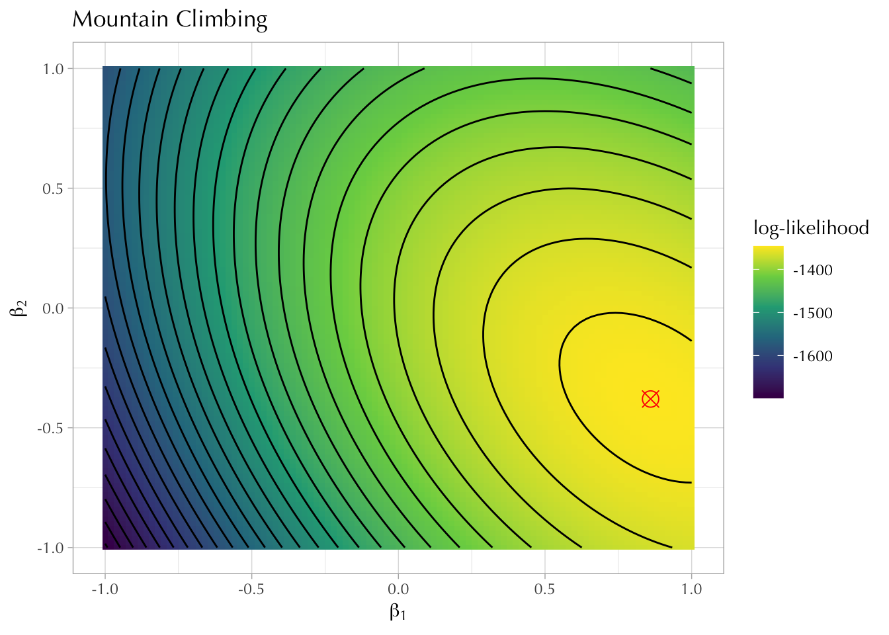
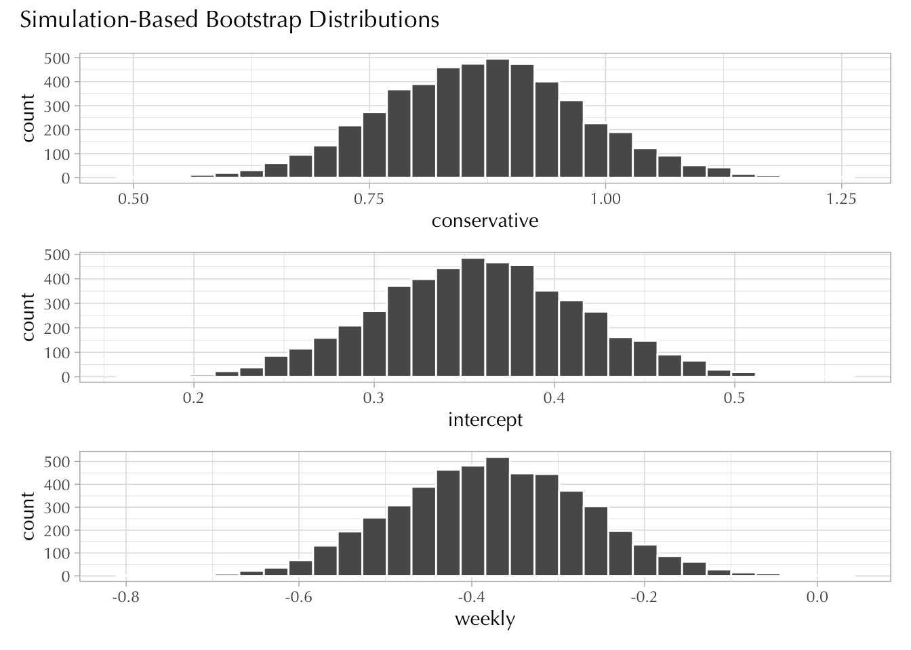

I’m going to show you how to estimate the same model in slightly different ways.
Let’s take four variables from the 2018 GSS:
cappun: favor or oppose death penalty for murder.
polviews: self-identification in a 7-point scale: extremely liberal (1), liberal (2), slightly liberal (3), moderate (4), slightly conservative (5), conservative (6), and extremely conservative (7).
attend: how often the respondent attends religious ceremonies: never (0), less than once a year (1), about once or twice a year (2), several times a year (3), about once a month (4), 2-3 times a month (5), nearly every week (6), every week (7), and several times a week (8).
degree: respondent’s highest degree. We will keep this variable as a factor variable—i.e., a kind of character vector which can be ordered and that plays well with R’s model formula syntax.
# A tibble: 2,102 × 6
attend polviews cappun degree weekly conservative
<dbl> <dbl> <int> <fct> <int> <int>
1 5 2 1 associate/junior college 0 1
2 2 1 1 bachelor's 0 1
3 6 0 0 bachelor's 0 0
4 8 3 0 graduate 1 1
5 4 -1 1 bachelor's 0 0
6 7 0 1 high school 1 0
7 7 1 1 high school 1 1
8 0 0 1 less than high school 0 0
9 4 2 1 graduate 0 1
10 5 0 1 high school 0 0
# ℹ 2,092 more rows
Note that in the previous code we created two additional variables and transformedpolviews:
weekly: attends religious ceremonies one or more times a week
polviews: this variable is now centered at 0.
conservative: slightly conservative, conservative, and extremely conservative.
Last week we learned that we could estimate a “saturated model” by hand by looking at the conditional probabilities in a \(2 \times 2 \times 2\) contingency table. This week, we learned how to estimated a “restricted model” like the one in Equation 10.1. This time, however, we can’t calculate the parameters in the model by hand.
We want to choose the parameters \(\alpha\), \(\beta_1\), and \(\beta_2\) that maximize the joint probability of the observed data. Strictly speaking, we want choose the parameters that maximize the following expression:
We usually refer to this expression like this as a “probability” when the parameter \(\theta\) is fixed and we are interested in making inferences about unknown observations; we refer to it as a “likelihood” when the data \(y\) is fixed and we are interested in making inferences about unknown parameters.
Note that both \(\boldsymbol y\) and \(\boldsymbol \theta\) (in bold) are vectors of size 2102 (the number of observations in the data frame). Each individual \(\theta_i\) is modeled as a function of our predictors, which are linear in the “logit” scale.
How, then, do we estimate the parameters in our restricted model?
10.1.1 Grid Search
Conceptually, the easiest way to estimate these parameters is by doing what’s called a “grid search.” This is also the most inefficient way to do it from a computational point of view.
We can create a “grid” like this:
Code
grid <-expand_grid(alpha =seq(-1, 1, by =0.02), beta1 =seq(-1, 1, by =0.02),beta2 =seq(-1, 1, by =0.02))grid
To do so I will rely on this custom function (which you’ll never see again):
Code
log_likelihood_cappun <-function(alpha, beta1, beta2) {## the linear part of the model## make sure that `d` exists in the global environment! linpred <- alpha + beta1 * d$conservative + beta2 * d$weekly## the inverse-logit transformation theta <-exp(linpred) / (1+exp(linpred))## the sum of the log-likelihoods;## we ultimately want coefficients that maximize this valuereturn(sum(dbinom(d$cappun, size =1, prob = theta, log =TRUE)))}
Now we apply the function to each row of the grid. There are more than a million rows, so this might take a few minutes!
Code
out <-vector("double", nrow(grid)) ## create empty vectorfor (i inseq_along(out)) { ## this will be a slow process!! out[[i]] <-log_likelihood_cappun(grid$alpha[[i]], grid$beta1[[i]], grid$beta2[[i]])}grid$ll <- out
Finally, we search for the maximum value of ll using the filter() function from the dplyr package.
Hopefully you can see why maximum likelihood estimation looks a little bit like mountain climbing.
Code
grid |>filter(near(alpha, 0.36)) |>ggplot(aes(beta1, beta2)) +geom_tile(aes(fill = ll)) +geom_point(data =filter(grid, ll ==max(ll)), size =4, pch =13, color ="red") +geom_contour(aes(z = ll), bins =30, color ="black") +scale_fill_viridis_c() +labs(title ="Mountain Climbing", fill ="log-likelihood",x = latex2exp::TeX("$\\beta_1$"), y = latex2exp::TeX("$\\beta_2$") )

Note. Unlike what we did last week, there’s no way to calculate these parameter values by hand.
10.1.2 The Easy Way
The easiest way to estimate this model is with R’s built-in glm function. This stands for generalized linear regression. The word “generalized” should serve as foreshadowing. Everything we learn here can be extended to the modeling other types of outcome variables (not just binary).
To use it we do three things:
Specify a model formula with a tilde ( ~ ) separating the outcome variable (left-hand side) from the predictors (right-hand side).
Specify the data argument.
An error will show up if the variables you specified in the formula don’t exist in the data.
Specify the family argument.
For a logistic regression this will always be “binomial.”
Let’s save the resulting object as mod:
Code
mod <-glm(cappun ~ conservative + weekly, data = d, family ="binomial")mod
Call: glm(formula = cappun ~ conservative + weekly, family = "binomial",
data = d)
Coefficients:
(Intercept) conservative weekly
0.3583 0.8640 -0.3741
Degrees of Freedom: 2101 Total (i.e. Null); 2099 Residual
Null Deviance: 2767
Residual Deviance: 2692 AIC: 2698
You can see a lot of useful information here, including the Deviance, the Null Deviance, and the AIC.
As a reminder:
The AIC is the deviance plus twice the number of parameters:
\[
\text{AIC} = D + 2k
\]
So 2692 + 6.
The deviance is just the log-likelihood multiplied by -2.
You can look at the log-likelihood by using the logLik() function. It should roughly correspond to the ll value we found earlier doing the grid search.
Code
logLik(mod)
'log Lik.' -1346.112 (df=3)
The null deviance corresponds to a model with no predictors.
You should be able to calculate this very easily. It’s going back to univariate statistics!
where \(\mathbf{X}\) is a \(2102 \times 3\) matrix and \(\boldsymbol \beta\) (in bold) is a vector that holds three parameters.
Code
dim(X)
[1] 2102 3
Finally, R will use some optimization algorithm to efficiently find the three values contained in \(\boldsymbol \beta\).
Click “Show me” if you want to see how this might happen. However, this is pretty advanced and you don’t really need to see “under the hood” to be able to drive a car. I don’t expect anyone to fully understand what’s going on here. However, I hope you can at least gain some appreciation for all the things the glm() function is doing for you.
Show me
## the "design matrix"X <-model.matrix(cappun ~ conservative + weekly, data = d)## the inverse-link functioninv_logit <-function(linpred) {exp(linpred) / (1+exp(linpred))}## a more general likelihood functionlog_likelihood_bernoulli <-function(beta, outcome, X) { linpred <- X %*% beta theta <-inv_logit(linpred) return(sum(dbinom(outcome, size =1, prob = theta, log =TRUE)))}opt <-optim(par =rep(0, ncol(X)), ## Sets all initial parameter values at zeromethod ="BFGS", ## The method used for optimization## The Bernoulli log-likelihood function;## it provides the stuff we want to maximizefn = log_likelihood_bernoulli, ## These are the arguments for log_likelihood_bernoulli which we ## DO NOT want to estimate. This means optim() will look for## the values of "beta" that maximize the log-likelihood.outcome = d$cappun, X = X,# This next line is critical: # it tells R to maximize rather than minimizecontrol =list(fnscale =-1),## this is used to calculate standard errors (if you wanted to)hessian =TRUE)names(opt$par) <-colnames(X)opt$par
We will focus on two measurements that will allow you to adjudicate between models based on their predictive accuracy.
Both of them build upon the notion of deviance:
\[
D = \log(\text{likelihood}) \times -2
\]
The Akaike Information Criteria
\[
\text{AIC} = D + k \times 2
\]
The Bayesian Information Criteria
\[
\text{BIC} = D + k \times \log(n)
\]
Out-of-sample deviance
Steve keeps saying that we should really care about how these models perform out-of-sample—i.e., how they are able to describe new observations. We don’t want to learn too much from our sample; otherwise it will perform poorly on new data (over-fitting). We also don’t want to learn too little from our sample (under-fitting).
As it turns out, the AIC approximates the out-of-sample deviance of a model.
The AIC is “asymptotically” equivalent to the so-called leave-one-out cross validation (LOOCV).
With LOOCV we fit the same model repeatedly to a dataset that excludes one observation and then use the resulting model to calculate the log-likelihood on the observation we left out. Finally, we add up the log-likelihoods and multiply them by \(-2\), which means we are actually calculating a deviance based on the left-out observations.
The following chunk of code demonstrates this result.
Show me
## we create an empty vessel to store the log-likelihoods for left-out obsout <-vector("double", nrow(d))for (i in1:nrow(d)) {## note how we exclude the i observation using integer subsetting. m <-glm(cappun ~ conservative + weekly, family ="binomial", data = d[-i, ])## then we get a prediction for the left-out observation theta <-predict(m, newdata = d[i, ], type ="response")## then we calculate the log-likelihood for the left-out observation out[[i]] <-dbinom(d$cappun[[i]], size =1, prob = theta, log =TRUE)}## deviance for the left-out observationssum(out) *-2
[1] 2698.251
As a reminder, this is the AIC for the model we calculated earlier:
Code
AIC(mod)
[1] 2698.224
They are almost the same!
Thus, for most purposes, the AIC provides a good approximation for the out-of-sample deviance.1
10.3 Exercises
10.3.1 Exercise
Describe how the following formulas are reshaping your data frame:
cappun ~ polviews + weekly + polviews:weekly
cappun ~ polviews * weekly
cappun ~ degree
Use the model.matrix() function to complement your answers.
10.3.2 Exercise
Compare the following models using AIC and BIC.
Code
mod1 <-glm(cappun ~ conservative + weekly, data = d, family ="binomial")mod2 <-glm(cappun ~ conservative * weekly, data = d, family ="binomial")mod3 <-glm(cappun ~ polviews + weekly, data = d, family ="binomial")mod4 <-glm(cappun ~ polviews * weekly, data = d, family ="binomial")
Interpret the intercept in all models.
Looking at mod4, what is the predicted probability that a “slightly conservative” individual that attends religious ceremonies weekly favors capital punishment?
Hint: You can create pretty coefficient tables with the msummary() function from the modelsummary package.
Code
msummary(list(mod1, mod2, mod3, mod4), gof_map ="none", output ="gt") |>opt_table_font(font ="Optima") ## this function comes from the gt package
(1)
(2)
(3)
(4)
(Intercept)
0.358
0.341
0.666
0.677
(0.057)
(0.059)
(0.054)
(0.055)
conservative
0.864
0.942
(0.105)
(0.127)
weekly
-0.374
-0.274
-0.488
-0.451
(0.112)
(0.143)
(0.115)
(0.116)
conservative × weekly
-0.263
(0.230)
polviews
0.405
0.441
(0.034)
(0.039)
polviews × weekly
-0.138
(0.076)
10.3.3 Exercise
Transform polviews into a new variable that has the following three values:
Fill in the conditional probabilities in the following table:
Probability that a respondent favors capital punishment ( \(\texttt{cappun} = 1\) )
weekly
polviews2
Saturated Model
Restricted Model
0
liberal
0
moderate
0
conservative
1
liberal
1
moderate
1
conservative
Hint: There are two ways to estimate the “saturated model”.
Using the model formula that includes all interactions: cappun ~ weekly*polviews2.
Then you can use either predict() or broom::augment()
Using dplyr
Code
d |>group_by(weekly, polviews2) |>summarize(p =mean(cappun))
10.3.5 Exercise
Do the following:
Look at the GSS data and choose an outcome variable that interests you.
Choose 2 or 3 predictors that interests you.
Create at least two models and then compare them using AIC and BIC.
Which model has a better out-of-sample predictive accuracy?
What is the relationship between your outcome and your predictors?
Don’t worry about making causal claims unless you think they are reasonable.
Keep it simple! This is only a class exercise!
10.3.6 Extra
I was originally going to ask you to calculate the standard deviations for bootstrap sampling distributions corresponding to \(\alpha\), \(\beta_1\), and \(\beta_2\) in Equation 10.1. The plan was to show you that these values correspond to the “standard errors” shown in the regression output.
Unfortunately, I couldn’t find a way to do this easily with the infer package, so here’s the code to do it:
Code
boot_coef <-replicate(n =2e3, simplify =FALSE, expr = { i <-sample(1:nrow(d), replace =TRUE) m <-glm(cappun ~ conservative + weekly, family ="binomial", data = d[i, ])coefficients(m)}) |>bind_rows()# glimpse(boot_coef)boot_coef |>pivot_longer(everything(), names_to ="term", values_to ="stat") |>group_by(term) |>summarize(estimate =mean(stat), std.error =sd(stat))
Update. There was—after all—a way to do this easily with the infer package.
Here it is:
Code
library(infer)boot <- d |>specify(cappun ~ weekly + conservative) |>generate(reps =5000, type ="bootstrap") |>fit(family ="binomial")boot |>group_by(term) |>summarize(mean =mean(estimate), std.error =sd(estimate))
# A tibble: 3 × 3
term mean std.error
<chr> <dbl> <dbl>
1 conservative 0.870 0.106
2 intercept 0.358 0.0574
3 weekly -0.378 0.112
Code
boot |>visualize(bins =30)

This will not be the case if the data is structured weirdly—e.g., time-series, nested observations, etc.↩︎
Source Code
---title: "Week 10"callout-appearance: simplecallout-icon: false---## Model EstimationI'm going to show you how to estimate the same model in slightly different ways.Let's take four variables from the 2018 GSS:- `cappun`: favor or oppose death penalty for murder.- `polviews`: self-identification in a 7-point scale: extremely liberal (`1`), liberal (`2`), slightly liberal (`3`), moderate (`4`), slightly conservative (`5`), conservative (`6`), and extremely conservative (`7`).- `attend`: how often the respondent attends religious ceremonies: never (`0`), less than once a year (`1`), about once or twice a year (`2`), several times a year (`3`), about once a month (`4`), 2-3 times a month (`5`), nearly every week (`6`), every week (`7`), and several times a week (`8`).- `degree`: respondent's highest degree. We will keep this variable as a *factor* variable---i.e., a kind of character vector which can be *ordered* and that plays well with R's *model formula* syntax.```{r}#| message: falselibrary(tidyverse)theme_set(theme_light(base_family ="Optima"))library(modelsummary)library(broom)library(gt)library(gssr)gss18 <-gss_get_yr(2018) d <- gss18 |>select(attend, polviews, cappun, degree) |> haven::zap_missing() |>mutate(across(!degree, haven::zap_labels)) |>mutate(degree = haven::as_factor(degree)) |>mutate(weekly =if_else(attend >=7, 1L, 0L),polviews = polviews -4,cappun =if_else(cappun ==1, 1L, 0L), ) |>mutate(conservative =as.integer(polviews >0)) |>drop_na() d```Note that in the previous code we created two additional variables and *transformed* `polviews`:- `weekly`: attends religious ceremonies one or more times a week- `polviews`: this variable is now centered at 0.- `conservative`: slightly conservative, conservative, and extremely conservative.Last week we learned that we could estimate a "saturated model" by hand by looking at the conditional probabilities in a $2 \times 2 \times 2$ contingency table. This week, we learned how to estimated a "restricted model" like the one in @eq-restricted. This time, however, we can't calculate the parameters in the model by hand.$$\log \Bigg( \frac{\Pr(\texttt{cappun}_i = 1)}{1-\Pr(\texttt{cappun}_i = 1)} \Bigg) = \alpha + \beta_1 \times \texttt{conservative}_i + \beta_2 \times \texttt{weekly}_i$$ {#eq-restricted}We want to choose the parameters $\alpha$, $\beta_1$, and $\beta_2$ that *maximize the joint probability of the observed data*. Strictly speaking, we want choose the parameters that maximize the following expression:$$\text{log-likelihood} = \texttt{sum(dbinom(} \boldsymbol{y} \texttt{, size = 1, prob = } \boldsymbol {\theta} \texttt{, log = TRUE))}$$ {#eq-logLik}::: callout-tipWe usually refer to this expression like this as a "probability" when the parameter $\theta$ is fixed and we are interested in making inferences about *unknown observations*; we refer to it as a "likelihood" when the data $y$ is fixed and we are interested in making inferences about *unknown parameters*.:::Note that both $\boldsymbol y$ and $\boldsymbol \theta$ (in bold) are vectors of size 2102 (the number of observations in the data frame). Each individual $\theta_i$ is modeled as a function of our *predictors,* which are linear in the "logit" scale.$$\text{logit}(\theta_i) = \alpha + \beta_1 \times \texttt{conservative}_i + \beta_2 \times \texttt{weekly}_i$$How, then, do we estimate the parameters in our restricted model?### Grid SearchConceptually, the easiest way to estimate these parameters is by doing what's called a "grid search." This is also the *most inefficient* way to do it from a computational point of view.We can create a "grid" like this:```{r}grid <-expand_grid(alpha =seq(-1, 1, by =0.02), beta1 =seq(-1, 1, by =0.02),beta2 =seq(-1, 1, by =0.02))grid```We will calculate the log-likelihood for each row in this grid and then choose the combination that produces the maximum value in @eq-logLik.::: callout-tipYou might sometimes see this mathematical expression:$$\underset{\alpha, \beta_1, \beta_2}{\arg \max} \ \texttt{log-likelihood}$$:::To do so I will rely on this custom function (which you'll never see again):```{r}log_likelihood_cappun <-function(alpha, beta1, beta2) {## the linear part of the model## make sure that `d` exists in the global environment! linpred <- alpha + beta1 * d$conservative + beta2 * d$weekly## the inverse-logit transformation theta <-exp(linpred) / (1+exp(linpred))## the sum of the log-likelihoods;## we ultimately want coefficients that maximize this valuereturn(sum(dbinom(d$cappun, size =1, prob = theta, log =TRUE)))}```Now we apply the function to each row of the grid. There are more than a million rows, so this might take a few minutes!```{r}#| cache: trueout <-vector("double", nrow(grid)) ## create empty vectorfor (i inseq_along(out)) { ## this will be a slow process!! out[[i]] <-log_likelihood_cappun(grid$alpha[[i]], grid$beta1[[i]], grid$beta2[[i]])}grid$ll <- out```Finally, we search for the maximum value of `ll` using the `filter()` function from the dplyr package.```{r}grid |>filter(ll ==max(ll))```Hopefully you can see why maximum likelihood estimation looks a little bit like mountain climbing.```{r}#| code-fold: truegrid |>filter(near(alpha, 0.36)) |>ggplot(aes(beta1, beta2)) +geom_tile(aes(fill = ll)) +geom_point(data =filter(grid, ll ==max(ll)), size =4, pch =13, color ="red") +geom_contour(aes(z = ll), bins =30, color ="black") +scale_fill_viridis_c() +labs(title ="Mountain Climbing", fill ="log-likelihood",x = latex2exp::TeX("$\\beta_1$"), y = latex2exp::TeX("$\\beta_2$") )```*Note. Unlike what we did last week, there's no way to calculate these parameter values by hand.*### The Easy WayThe easiest way to estimate this model is with R's built-in `glm` function. This stands for *generalized linear regression*. The word "generalized" should serve as foreshadowing. *Everything we learn here can be extended to the modeling other types of outcome variables (not just binary).*To use it we do three things:1. Specify a *model formula* with a tilde ( `~` ) separating the outcome variable (left-hand side) from the predictors (right-hand side).2. Specify the `data` argument. An error will show up if the variables you specified in the formula don't exist in the data.3. Specify the `family` argument. For a logistic regression this will always be "binomial."Let's save the resulting object as `mod`:```{r}mod <-glm(cappun ~ conservative + weekly, data = d, family ="binomial")mod```You can see a lot of useful information here, including the Deviance, the Null Deviance, and the AIC.As a reminder:- The AIC is the *deviance* plus twice the number of parameters: $$ \text{AIC} = D + 2k $$ So 2692 + 6.- The *deviance* is just the log-likelihood multiplied by -2. You can look at the log-likelihood by using the `logLik()` function. It should roughly correspond to the `ll` value we found earlier doing the grid search.```{r}logLik(mod)```- The *null deviance* corresponds to a model with no predictors. *You should be able to calculate this very easily. It's going back to univariate statistics!*```{r} nullll <-sum(dbinom(d$cappun, size =1, prob =mean(d$cappun), log =TRUE)) nullll *-2```Sometimes you'll see people use the `summary()` function to get even *more* information.```{r}summary(mod)```Or you'll see people using the `coef()`---or `coefficients()`---function to extract the parameter values.```{r}coef(mod)coefficients(mod)```There are also some useful packages that work seamlessly with `glm`.------------------------------------------------------------------------The [broom](https://broom.tidymodels.org/) package with it's associated three functions: `tidy()`, `glance()`, and `augment()`.```{r}broom::tidy(mod)broom::glance(mod)## the .fitted values are predictions in log-odds## add type.predict = "response" to get predicted probabilities for each row.broom::augment(mod) ```::: callout-tipNote. The `broom::augment()` works very similar to the built-in `predict()` function.:::You can use `augment()` to generate predicted probabilities for each row.```{r}augment(mod) |>distinct(conservative, weekly, .fitted) |>mutate(prob =plogis(.fitted))```------------------------------------------------------------------------The [modelsummary](https://modelsummary.com/index.html) package allows for the creation of publication ready tables.```{r}modelsummary::msummary(list("Model 1"= mod), output ="gt")```### Looking Under the HoodI think it's important to know how the *model formula* is reshaping your data frame.The `glm()` function will create a matrix based on your data and the formula. You can see this by using the `model.matrix()` function.```{r}X <-model.matrix(cappun ~ conservative + weekly, data = d)head(X)```Matrix notation allows us to express our model more succinctly.This expression$$\begin{align}&\text{logit}(\theta_i) = \alpha + \beta_1 \times \texttt{conservative}_i + \beta_2 \times \texttt{weekly}_i \\\\&\text{for } i = 1, 2, ..., n\end{align}$$can be written as a matrix multiplication$$\text{logit}(\boldsymbol \theta) = \mathbf{X} \boldsymbol \beta$$where $\mathbf{X}$ is a $2102 \times 3$ matrix and $\boldsymbol \beta$ (in bold) is a vector that holds three parameters.```{r}dim(X)```Finally, R will use *some* optimization algorithm to efficiently find the three values contained in $\boldsymbol \beta$.------------------------------------------------------------------------Click "Show me" if you want to see how this *might* happen. However, this is pretty advanced and you don't really need to see "under the hood" to be able to drive a car. *I don't expect anyone to fully understand what's going on here.* However, I hope you can at least gain some appreciation for all the things the `glm()` function is doing for you.```{r}#| code-fold: true#| code-summary: "Show me"## the "design matrix"X <-model.matrix(cappun ~ conservative + weekly, data = d)## the inverse-link functioninv_logit <-function(linpred) {exp(linpred) / (1+exp(linpred))}## a more general likelihood functionlog_likelihood_bernoulli <-function(beta, outcome, X) { linpred <- X %*% beta theta <-inv_logit(linpred) return(sum(dbinom(outcome, size =1, prob = theta, log =TRUE)))}opt <-optim(par =rep(0, ncol(X)), ## Sets all initial parameter values at zeromethod ="BFGS", ## The method used for optimization## The Bernoulli log-likelihood function;## it provides the stuff we want to maximizefn = log_likelihood_bernoulli, ## These are the arguments for log_likelihood_bernoulli which we ## DO NOT want to estimate. This means optim() will look for## the values of "beta" that maximize the log-likelihood.outcome = d$cappun, X = X,# This next line is critical: # it tells R to maximize rather than minimizecontrol =list(fnscale =-1),## this is used to calculate standard errors (if you wanted to)hessian =TRUE)names(opt$par) <-colnames(X)opt$par```## Model ComparisonWe will focus on two measurements that will allow you to adjudicate between models based on their *predictive accuracy.*Both of them build upon the notion of ***deviance**:*$$D = \log(\text{likelihood}) \times -2$$**The Akaike Information Criteria**$$\text{AIC} = D + k \times 2$$<aside>$k$ is the number of parameters in the model</aside>**The Bayesian Information Criteria**$$\text{BIC} = D + k \times \log(n)$$***Out-of-sample deviance***Steve keeps saying that we *should* really care about how these models perform out-of-sample---i.e., how they are able to describe new observations. We don't want to learn *too much* from our sample; otherwise it will perform poorly on new data *(over-fitting).* We also don't want to learn *too little* from our sample *(under-fitting).*As it turns out, the AIC approximates the *out-of-sample deviance* of a model.*The AIC is "asymptotically" equivalent to the so-called leave-one-out cross validation (LOOCV).*With LOOCV we fit the same model repeatedly to a dataset that excludes one observation and then use the resulting model to calculate the log-likelihood on the observation we left out. Finally, we add up the log-likelihoods and multiply them by $-2$, which means we are actually calculating a *deviance* based on the left-out observations.The following chunk of code demonstrates this result.```{r}#| code-fold: true#| code-summary: "Show me"#| cache: true## we create an empty vessel to store the log-likelihoods for left-out obsout <-vector("double", nrow(d))for (i in1:nrow(d)) {## note how we exclude the i observation using integer subsetting. m <-glm(cappun ~ conservative + weekly, family ="binomial", data = d[-i, ])## then we get a prediction for the left-out observation theta <-predict(m, newdata = d[i, ], type ="response")## then we calculate the log-likelihood for the left-out observation out[[i]] <-dbinom(d$cappun[[i]], size =1, prob = theta, log =TRUE)}## deviance for the left-out observationssum(out) *-2```As a reminder, this is the AIC for the model we calculated earlier:```{r}AIC(mod)```*They are almost the same!*Thus, for most purposes, the AIC provides a good approximation for the out-of-sample deviance.[^week10-1][^week10-1]: This will not be the case if the data is structured weirdly---e.g., time-series, nested observations, etc.## Exercises### Exercise::: callout-noteDescribe how the following formulas are reshaping your data frame:- `cappun ~ polviews + weekly + polviews:weekly`- `cappun ~ polviews * weekly`- `cappun ~ degree`Use the `model.matrix()` function to complement your answers.:::### Exercise::: callout-note*Compare the following models using AIC and BIC.*```{r}mod1 <-glm(cappun ~ conservative + weekly, data = d, family ="binomial")mod2 <-glm(cappun ~ conservative * weekly, data = d, family ="binomial")mod3 <-glm(cappun ~ polviews + weekly, data = d, family ="binomial")mod4 <-glm(cappun ~ polviews * weekly, data = d, family ="binomial")```*Interpret the intercept in all models.**Looking at `mod4`, what is the predicted probability that a "slightly conservative" individual that attends religious ceremonies weekly favors capital punishment?*:::::: callout-tipHint: You can create pretty coefficient tables with the `msummary()` function from the `modelsummary` package.```{r}msummary(list(mod1, mod2, mod3, mod4), gof_map ="none", output ="gt") |>opt_table_font(font ="Optima") ## this function comes from the gt package```:::### Exercise::: callout-noteTransform `polviews` into a new variable that has the following three values:$$\texttt{polviews2} = \begin{cases}\text{liberal} &\text{if} &\text{polviews} < 0 \\\text{moderate} &\text{if} &\text{polviews} == 0 \\\text{conservative} &\text{if} &\text{polviews} > 0\end{cases}$$Fit the following model three times, choosing with a new reference category each time.- `cappun ~ polviews2 + weekly`Interpret the coefficients.:::::: callout-tipHint: You can create this variable by using two nested `if_else()` statements, but you might want to prefer using the `case_when()` function.<https://dplyr.tidyverse.org/reference/case_when.html>:::::: callout-tipHint: You can change the reference category using the `fct_relevel()`<https://forcats.tidyverse.org/reference/fct_relevel.html>:::### Exercise::: callout-noteFill in the conditional probabilities in the following table:| `weekly` | `polviews2` | Saturated Model | Restricted Model ||----------|--------------|-----------------|------------------|| 0 | liberal | | || 0 | moderate | | || 0 | conservative | | || 1 | liberal | | || 1 | moderate | | || 1 | conservative | | |: Probability that a respondent favors capital punishment ( $\texttt{cappun} = 1$ ):::::: callout-tipHint: There are two ways to estimate the "saturated model".- Using the model formula that includes all interactions: `cappun ~ weekly*polviews2`. Then you can use either `predict()` or `broom::augment()`- Using `dplyr````{r}#| eval: false d |>group_by(weekly, polviews2) |>summarize(p =mean(cappun))```:::### Exercise::: callout-noteDo the following:- Look at the GSS data and choose an outcome variable that interests you.- Choose 2 or 3 predictors that interests you.- Create at least two models and then compare them using AIC and BIC. Which model has a better out-of-sample predictive accuracy?- What is the relationship between your outcome and your predictors? *Don't worry about making causal claims unless you think they are reasonable.*- *Keep it simple! This is only a class exercise!*:::### ExtraI was originally going to ask you to calculate the standard deviations for bootstrap sampling distributions corresponding to $\alpha$, $\beta_1$, and $\beta_2$ in @eq-restricted. The plan was to show you that these values correspond to the "standard errors" shown in the regression output.Unfortunately, I couldn't find a way to do this easily with the `infer` package, so here's the code to do it:```{r}#| cache: trueboot_coef <-replicate(n =2e3, simplify =FALSE, expr = { i <-sample(1:nrow(d), replace =TRUE) m <-glm(cappun ~ conservative + weekly, family ="binomial", data = d[i, ])coefficients(m)}) |>bind_rows()# glimpse(boot_coef)boot_coef |>pivot_longer(everything(), names_to ="term", values_to ="stat") |>group_by(term) |>summarize(estimate =mean(stat), std.error =sd(stat))broom::tidy(mod)```------------------------------------------------------------------------*Update. There was---after all---a way to do this easily with the infer package.**Here it is:*```{r}#| cache: truelibrary(infer)boot <- d |>specify(cappun ~ weekly + conservative) |>generate(reps =5000, type ="bootstrap") |>fit(family ="binomial")boot |>group_by(term) |>summarize(mean =mean(estimate), std.error =sd(estimate))boot |>visualize(bins =30)```